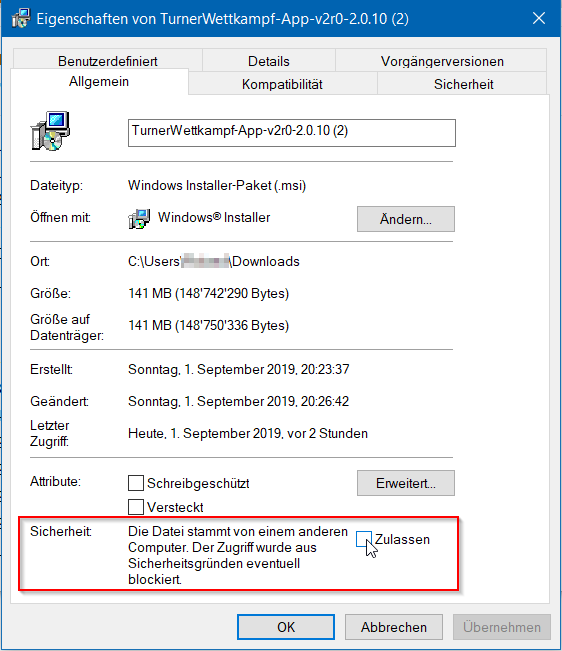

KuTu
Wettkampf-App für Kunst- und Geräteturnen
Features:
- Verwaltung von Turner mit ihren Vereinen
- Erstellen von Wettkämpfen (KuTu, GeTu und weitere)
- Zuweisen von Turner in eine Kategorie/ein Programm eines Wettkampfs
- Import von Turner (z.B. kopiert aus Turneranmeldung-Excel) mit Dupletten-Abgleich
- Riegeneinteilung/Durchgangplanung (mit Vorbelegungs-Vorschlag)
- Turner Kategorien-Wechsel / Programm-Umteilung
- Generieren von Notenblätter, Riegen-Notenblätter, Kategorienlisten, ...
- Ranglisten Erstellung mit div. Gruppierungskriterien
- Netzwerk-Modus mit Mobile-App
- Online-Admin Oberfläche für in die Wettkampf-Planung und -Durchführung
- Online-Anmeldung mit elektronischer Datenübernahme für in die Wettkampf-Planung
- Online-Resultaterfassung
- Online Echtzeit Resultat-Anzeige
- Steuerung der Bodenmusik
- Regelwerk für die korrekte Rangierung bei Punktegleichstand
- Regelwerk für Riegen/Turner-Rotationen
- Regelwerk für Team Zusammenstellung und Resultat-Berechnung
- Regelwerk für Altersklassen Abgrenzungen
- Integration in Dateisystem
- für die Hinterlegung von Vereins- oder Wettkampfspezifischen Logos
- für die Ablage der generierten Exportdateien (Notenblätter, Ranglisten, Wettkampfdaten)
- Import und Export von Wettkampfdaten
- Analysen (grafische Auswertung) auf den Ebenen Turner, Verein, Gerät mit div. Gruppierungskriterien, Jahr- und Wettkampfübergreifend.
Nutzung der App via Cloud
Die App kann direkt über die Cloud benutzt werden.
Installationshinweise Desktopversion
Systemanforderungen:
Die App wird per Installer installiert und bringt die notwendige Java-Runtime mit sich.
Es sind mind. 4GB RAM und 1GB freier Festplattenspeicher notwendig. Der Bildschirm sollte mind. 1024x768 Pixel gross sein.
Die App läuft unter Windows, MacOS und Linux.
Download:
Aktuellste Version
Die Installationsdatei ist nicht signiert und führt deshalb bei der Installation zu Sicherheitswarnungen - oder
die Installation bricht ab.
Es gibt für die jeweiligen Betriebssysteme Workarounds, mit denen die Installation ordentlich ausgeführt werden
kann.
Windows
Nach dem Download der msi-Datei ist es notwendig, die folgende Einstellung im Eigenschaft-Dialog (rechte
Maustaste auf der msi-Datei und dann Eigenschaften) vorzunehmen:

MacOS
Nach dem Download und öffnen der pkg-Datei ist es notwendig, jeweils "Dennoch öffnen", resp. nicht in den Papierkorb zu legen. Dann muss in der Systemsteuerung unter Datenschutz und Sicherheit der Button "Dennoch öffnen" angewählt werden.
Test-Installation
Zum Ausprobieren oder zum Testen der nächsten Programm-Bereitstellung lässt sich eine Test-Installation
parallel zur produktiv installierten Version betreiben.
Siehe Hinweise, wie
die Test-Installation aufgesetzt werden kann.